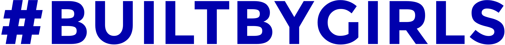
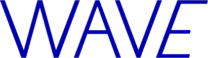
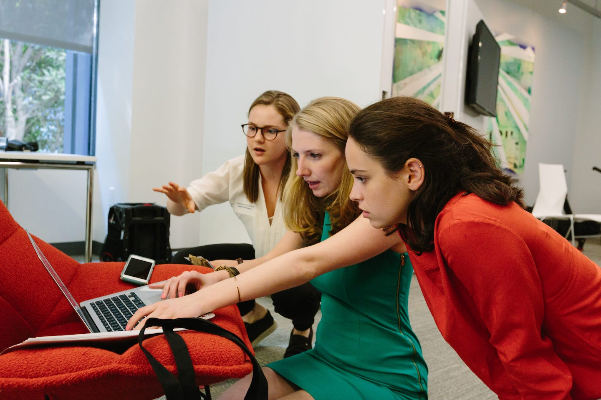
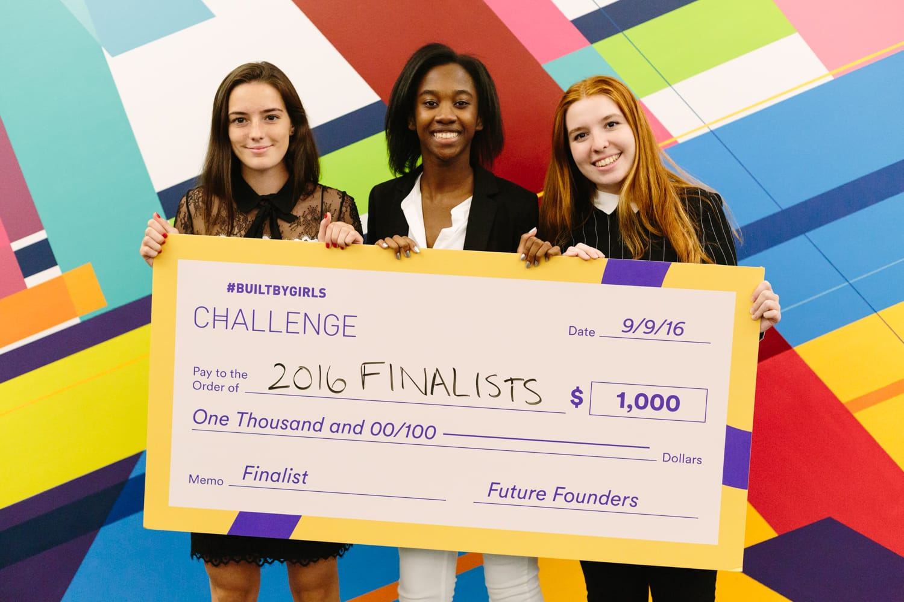
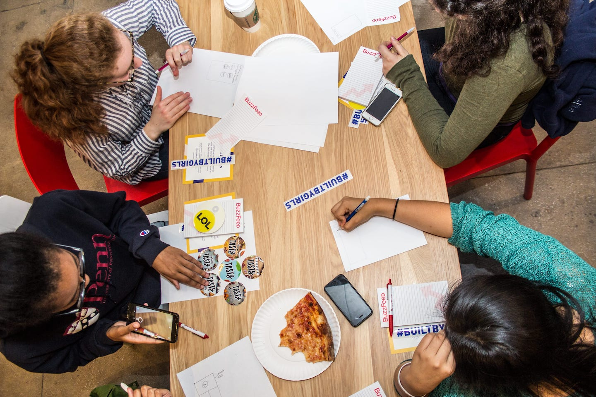
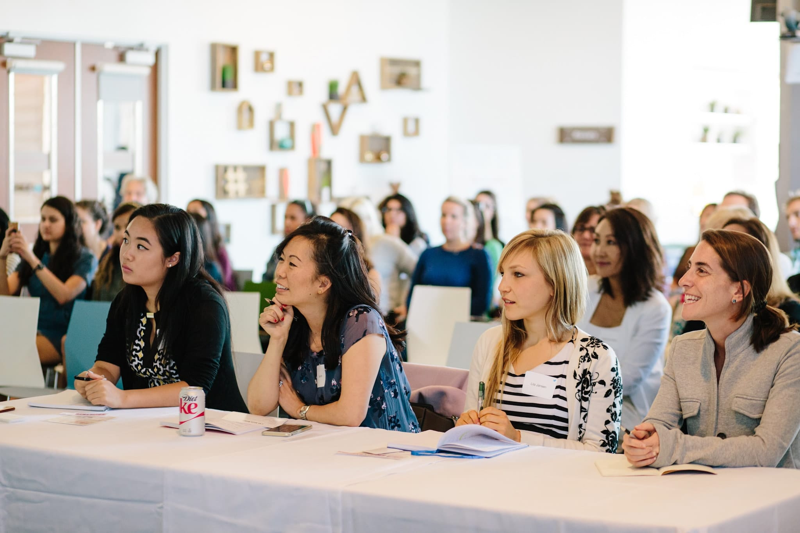

#BUILTBYGIRLS is an organization for girls and young women. They organize visits to tech companies, prep you for your internships, and connect you with boss advisors who help you get ahead of the game. This organization wants to push girls even farther than just the art of coding and deeper into the tech world!
Programs

:

Wave is a program where #BUILTBYGIRLS connect young women with professionals in the tech industry. Each pair meet once a month in a span of three months. The program is a year long with a rotation of an advisor every three months. Wave provides the opportunity to get a glimpse into the tech industry through a mentor.
Challenge:

Challenge is a tech competition girls come up with a product concept,designs and a working prototype. Finalists will have the opportunity to pitch their concept in San Francisco in front of panel of girl judges and the chance to win $10,000.
Hashtag:

Every month, high school and college women meet at a tech company and learn how they come up with their products. Activities include panels, workshops, and networking sessions.
Girls Who Fund:

Girls Who Fund is a four week internship in New York City for college-bound girls. In the four weeks, they learn about the basics of running a startup, the fundamentals of venture capital, and meet with founders of tech companies.